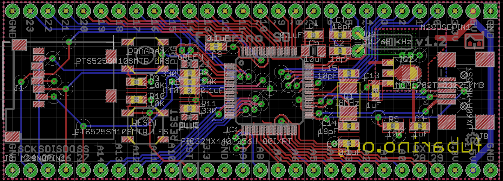

Fubarino SD
Buy Fubarino SD on SEEED Bazaar.

Description
The Fubarino SD board brings affordable, breadboard compatible high speed
computing power to the Arduino-compatible chipKIT/MPIDE platform. It is
able to run almost all Arduino sketches right out of the box at a great
price, and includes more memory, speed, and I/O pins than a typical Arduino
or clone. And it includes a microSD card slot for easy sketch access to
huge file storage.
Features
- PIC32MX440F256H - 256K Flash, 32K RAM @ 80MHz 32-bit MIPS core
- MPIDE (Mulit Platform IDE - a fork of the Arduino IDE) supports Fubarino
SD board out of the box
- 45 Digital IO (many are 5V tolerant)
- 15 Analog inputs (10-bit)
- 2 hardware serial ports (UARTs) - one accessible on pins 28 (rx) and 29
(tx), the other on pins 8 and 9, plus a serial connection over USB (12Mbps)
- Comes with headers for easy mounting on a breadboard
- Directly compatible with 3.3V devices. No level converting necessary.
- Small form factor - easy to integrate into your project
- Great for projects that need two hardware serial ports plus a USB connection
and file storate
- Easy to program, no additional hardware is required to load sketches –
just plug into a USB port and run MPIDE
- Can be used as USB to microSD adapter
- ICSP Header for use with optional Microchip hardware programmer/debuggers
(like PICKit3, ICD3 or RealIce)
- Can be powered through USB, or 2.3V to 13V DC input power
- Extra power and ground pins for ease of wiring into your project
- microSD slot connected to the PIC32 hardware SPI port for large file access
from your sketches
- USB bootloader (avrdude compatible) for seemless sketch uploading within
MPIDE
Documents
Please visit our wiki page for more info about this product. It will be
appreciated if you can help us improve the documents, add more demo code
or tutorials. For technical support, please post your questions to our
forum.
Programming mode
1. Press and hold the PRG button while pressing and releasing the RESET
button, then release the PRG button. This causes the Fubarino SD to enter
programming mode. You must do this before you upload a new sketch from
MPIDE.